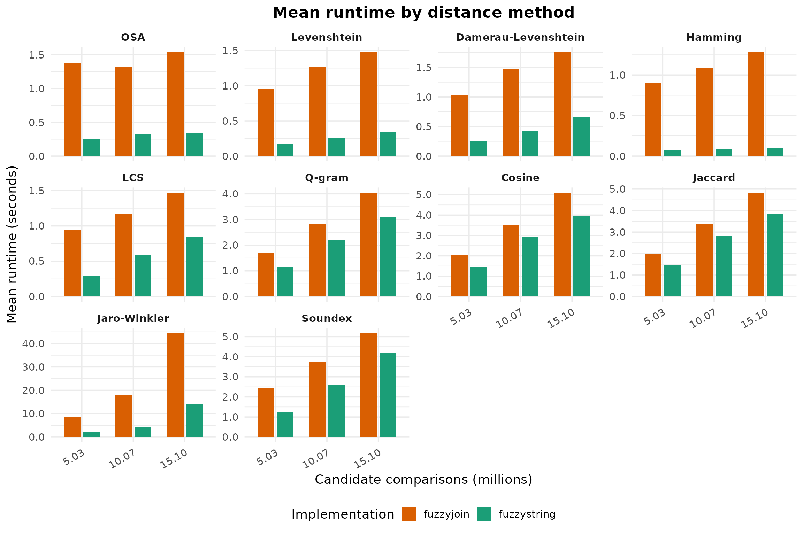
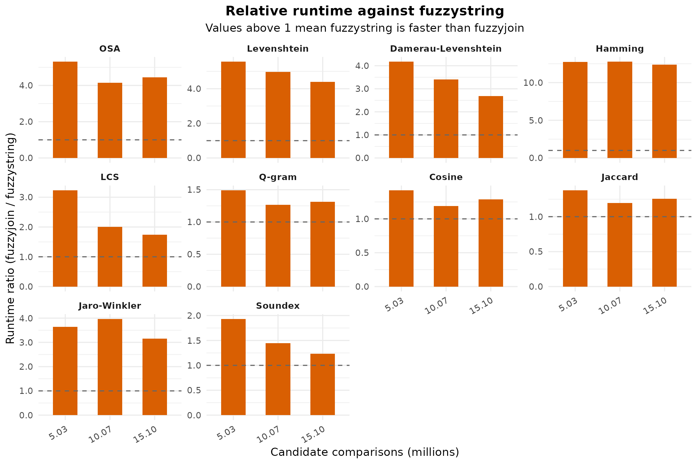

Benchmarking fuzzystring against fuzzyjoin
Paul Efren Santos Andrade
2026-03-28
Source:vignettes/benchmark_fuzzyjoin_comparison.Rmd
benchmark_fuzzyjoin_comparison.Rmd
library(dplyr)
#>
#> Attaching package: 'dplyr'
#> The following objects are masked from 'package:stats':
#>
#> filter, lag
#> The following objects are masked from 'package:base':
#>
#> intersect, setdiff, setequal, union
library(tidyr)
library(ggplot2)
find_benchmark_csv <- function() {
candidates <- c(
file.path("inst", "extdata", "rbase_string_benchmark.csv"),
file.path("..", "inst", "extdata", "rbase_string_benchmark.csv"),
system.file("extdata", "rbase_string_benchmark.csv", package = "fuzzystring")
)
hit <- candidates[file.exists(candidates)][1]
if (is.na(hit)) {
stop(
"Could not find the precomputed benchmark CSV. Expected it in ",
paste(candidates, collapse = " or "),
call. = FALSE
)
}
hit
}
results_raw <- utils::read.csv(find_benchmark_csv(), stringsAsFactors = FALSE)
method_levels <- c(
"osa", "lv", "dl", "hamming", "lcs",
"qgram", "cosine", "jaccard", "jw", "soundex"
)
method_labels <- c(
osa = "OSA",
lv = "Levenshtein",
dl = "Damerau-Levenshtein",
hamming = "Hamming",
lcs = "LCS",
qgram = "Q-gram",
cosine = "Cosine",
jaccard = "Jaccard",
jw = "Jaro-Winkler",
soundex = "Soundex"
)
comparison_levels <- sprintf(
"%.2f",
sort(unique(results_raw$n_comps / 1e6))
)
summary_raw <- results_raw %>%
group_by(expr, method, n_comps) %>%
summarise(mean_time_ns = mean(time), .groups = "drop") %>%
mutate(mean_time_ms = mean_time_ns / 1e6)
wide_summary <- summary_raw %>%
select(expr, method, n_comps, mean_time_ms) %>%
pivot_wider(names_from = expr, values_from = mean_time_ms) %>%
mutate(
runtime_ratio = fuzzyjoin / fuzzystring,
method_label = factor(
recode(method, !!!method_labels),
levels = unname(method_labels[method_levels])
),
comparisons_millions = n_comps / 1e6,
comparisons_label = factor(
sprintf("%.2f", comparisons_millions),
levels = comparison_levels
)
) %>%
arrange(method_label, n_comps)
absolute_plot_data <- summary_raw %>%
mutate(
time_seconds = mean_time_ms / 1000,
method_label = factor(
recode(method, !!!method_labels),
levels = unname(method_labels[method_levels])
),
comparisons_label = factor(
sprintf("%.2f", n_comps / 1e6),
levels = comparison_levels
),
implementation = factor(expr, levels = c("fuzzyjoin", "fuzzystring"))
)
method_ranking <- wide_summary %>%
group_by(method_label) %>%
summarise(avg_runtime_ratio = mean(runtime_ratio), .groups = "drop") %>%
arrange(desc(avg_runtime_ratio))
summary_table <- wide_summary %>%
transmute(
Method = as.character(method_label),
`Candidate comparisons (M)` = sprintf("%.2f", comparisons_millions),
`Mean time: fuzzyjoin (ms)` = round(fuzzyjoin, 2),
`Mean time: fuzzystring (ms)` = round(fuzzystring, 2),
`Runtime ratio (fuzzyjoin / fuzzystring)` = round(runtime_ratio, 2)
)
ranking_table <- method_ranking %>%
transmute(
Method = as.character(method_label),
`Average runtime ratio` = round(avg_runtime_ratio, 2)
)
overall_ratio <- mean(wide_summary$runtime_ratio)Overview
This vignette documents the benchmark used to compare
fuzzyjoin with the fuzzystring_join()
reimplementation in fuzzystring. The benchmark code is
shown for reproducibility, but it is not executed when
this vignette is built. Instead, the analysis below reads the
precomputed CSV snapshot bundled in
inst/extdata/rbase_string_benchmark.csv.
The benchmark covers 10 distance methods, 3 sample sizes
(250, 500, and 750), and 10
repetitions per implementation. Across 30 method-size combinations,
fuzzystring is faster in every case. The mean runtime
ratio is 3.94x, meaning that, on average, fuzzyjoin takes
almost four times as long as the reimplemented fuzzystring
path on this benchmark snapshot.
Benchmark Script
The script below is the benchmark used to generate the CSV analyzed in this document. It is displayed as reference only.
library(microbenchmark)
library(fuzzyjoin)
library(fuzzystring)
library(qdapDictionaries)
library(tibble)
samp_sizes <- c(250, 500, 750)
seed <- 2016
params <- list(
list(method = "osa", mode = "inner", max_dist = 1, q = 0),
list(method = "lv", mode = "inner", max_dist = 1, q = 0),
list(method = "dl", mode = "inner", max_dist = 1, q = 0),
list(method = "hamming", mode = "inner", max_dist = 1, q = 0),
list(method = "lcs", mode = "inner", max_dist = 1, q = 0),
list(method = "qgram", mode = "inner", max_dist = 2, q = 2),
list(method = "cosine", mode = "inner", max_dist = 0.5, q = 2),
list(method = "jaccard", mode = "inner", max_dist = 0.5, q = 2),
list(method = "jw", mode = "inner", max_dist = 0.5, q = 0),
list(method = "soundex", mode = "inner", max_dist = 0.5, q = 0)
)
args <- commandArgs(trailingOnly = TRUE)
if (length(args) > 0) {
params <- Filter(function(p) p$method %in% args, params)
}
data(misspellings)
words <- as.data.frame(DICTIONARY)
results <- data.frame()
for (p in params) {
for (nsamp in samp_sizes) {
cat(sprintf("Running %s with %d samples\n", p$method, nsamp))
set.seed(seed)
sub_misspellings <- misspellings[sample(seq_len(nrow(misspellings)), nsamp), ]
bench <- microbenchmark(
fuzzyjoin = {
fuzzy_res <- stringdist_join(
sub_misspellings, words,
by = c(misspelling = "word"),
method = p$method,
mode = p$mode,
max_dist = p$max_dist,
q = p$q
)
},
fuzzystring = {
fuzzystring_res <- fuzzystring_join(
sub_misspellings, words,
by = c(misspelling = "word"),
method = p$method,
mode = p$mode,
max_dist = p$max_dist,
q = p$q
)
},
times = 10
)
# Verify that both implementations return the same result.
fuzzy_res <- stringdist_join(
sub_misspellings, words,
by = c(misspelling = "word"),
method = p$method,
mode = p$mode,
max_dist = p$max_dist,
q = p$q
)
fuzzystring_res <- fuzzystring_join(
sub_misspellings, words,
by = c(misspelling = "word"),
method = p$method,
mode = p$mode,
max_dist = p$max_dist,
q = p$q
)
if (!isTRUE(all.equal(fuzzy_res, fuzzystring_res)) && p$method != "soundex") {
message("Mismatch detected: fuzzyjoin vs fuzzystring for method: ", p$method)
}
df <- as.data.frame(bench)
df$method <- p$method
df$n_comps <- nrow(sub_misspellings) * nrow(words)
df$os <- unname(Sys.info()["sysname"])
results <- rbind(results, df)
}
}Results
The benchmark spans 10 string distance methods and 3 sample sizes, producing 30 aggregated method-size combinations. The table below reports mean runtime in milliseconds and the relative runtime ratio used throughout the figures.
The ranking below summarizes the average speedup by method. Larger values mean that fuzzystring is faster by a wider margin.
Absolute Runtime
ggplot(
absolute_plot_data,
aes(x = comparisons_label, y = time_seconds, fill = implementation)
) +
geom_col(position = position_dodge(width = 0.75), width = 0.65) +
facet_wrap(~ method_label, scales = "free_y") +
labs(
title = "Mean runtime by distance method",
x = "Candidate comparisons (millions)",
y = "Mean runtime (seconds)",
fill = "Implementation"
) +
scale_fill_manual(
values = c("fuzzyjoin" = "#D95F02", "fuzzystring" = "#1B9E77"),
labels = c("fuzzyjoin", "fuzzystring")
) +
scale_y_continuous(labels = function(x) sprintf("%.1f", x)) +
theme_minimal(base_size = 14) +
theme(
strip.text = element_text(face = "bold"),
legend.position = "bottom",
plot.title = element_text(face = "bold", hjust = 0.5),
plot.subtitle = element_text(hjust = 0.5),
axis.text.x = element_text(angle = 30, hjust = 1)
)
Relative Runtime
Values above 1 indicate that fuzzystring is faster than fuzzyjoin for the same method and workload size.
ggplot(
wide_summary,
aes(x = comparisons_label, y = runtime_ratio)
) +
geom_col(fill = "#D95F02", width = 0.55) +
geom_hline(yintercept = 1, linetype = "dashed", color = "gray40") +
facet_wrap(~ method_label, scales = "free_y") +
labs(
title = "Relative runtime against fuzzystring",
subtitle = "Values above 1 mean fuzzystring is faster than fuzzyjoin",
x = "Candidate comparisons (millions)",
y = "Runtime ratio (fuzzyjoin / fuzzystring)"
) +
scale_y_continuous(labels = function(x) sprintf("%.1f", x)) +
theme_minimal(base_size = 14) +
theme(
strip.text = element_text(face = "bold"),
legend.position = "none",
plot.title = element_text(face = "bold", hjust = 0.5),
plot.subtitle = element_text(hjust = 0.5),
axis.text.x = element_text(angle = 30, hjust = 1)
)
Interpretation
This benchmark snapshot supports the same conclusion across all methods tested: the fuzzystring reimplementation is consistently faster than fuzzyjoin for the workloads covered here.
The largest average gains appear in Hamming, Levenshtein, OSA, and
Damerau-Levenshtein, while cosine, q-gram, jaccard, and soundex still
show a clear but smaller improvement. In other words, the reimplemented
path does not only match fuzzyjoin functionally; it also
improves runtime across every benchmarked method-size combination in
this snapshot.